The figures below show trends for select countries, based on a large global dataset (and accompanying codebook) which I assembled from commonly used quantitative indicators on health, gender equality and several types of violence. (The codebook, including variable definitions and summary statistics, is available as a Googlesheet in the shared Google Drive of the Metrics Working Group, or at this link; access via logging into the shared folder provides more functionality. The dataset is available in the shared Dropbox folder of the Working Group.)
IsTrue <- function(x) { !is.na(x) & x }
load("_data/LSCMWG_working_data.RData")
load("_data/dataset_LSCMWG.RData")
MakeFigure <- function(variable, countries = c("Afghanistan", "Mozambique", "El Salvador")) {
dat <- data[data$country %in% countries, c("year", "country", variable)]
first_year <- min(dat$year[!is.na(dat[, variable])])
ggplot(dat, aes(x = year, y = !!sym(variable), group = country, color = country)) +
stat_summary(fun = "mean", geom = "line", na.rm = TRUE, size = 1) +
stat_summary(fun = "mean", geom = "point", na.rm = TRUE, size = 3) +
xlim(first_year, 2019) + theme_bw() + ggtitle(paste(variable))
}lapply(variables$health_full, MakeFigure)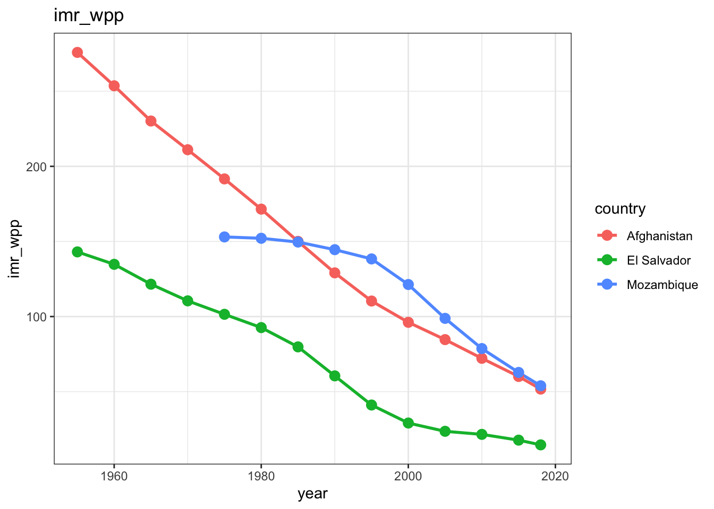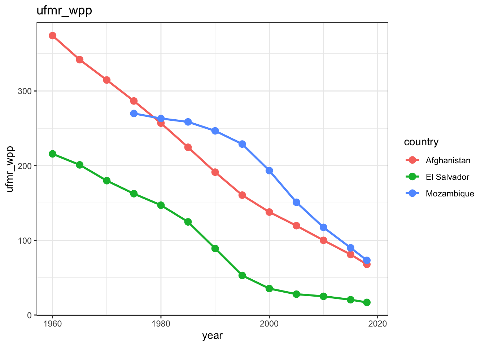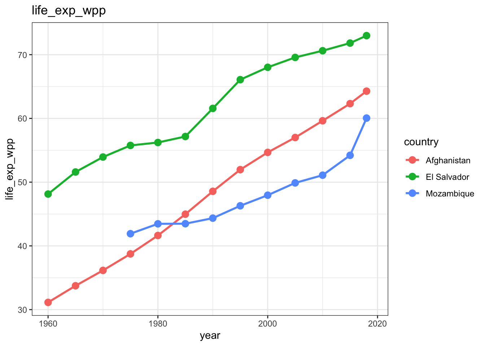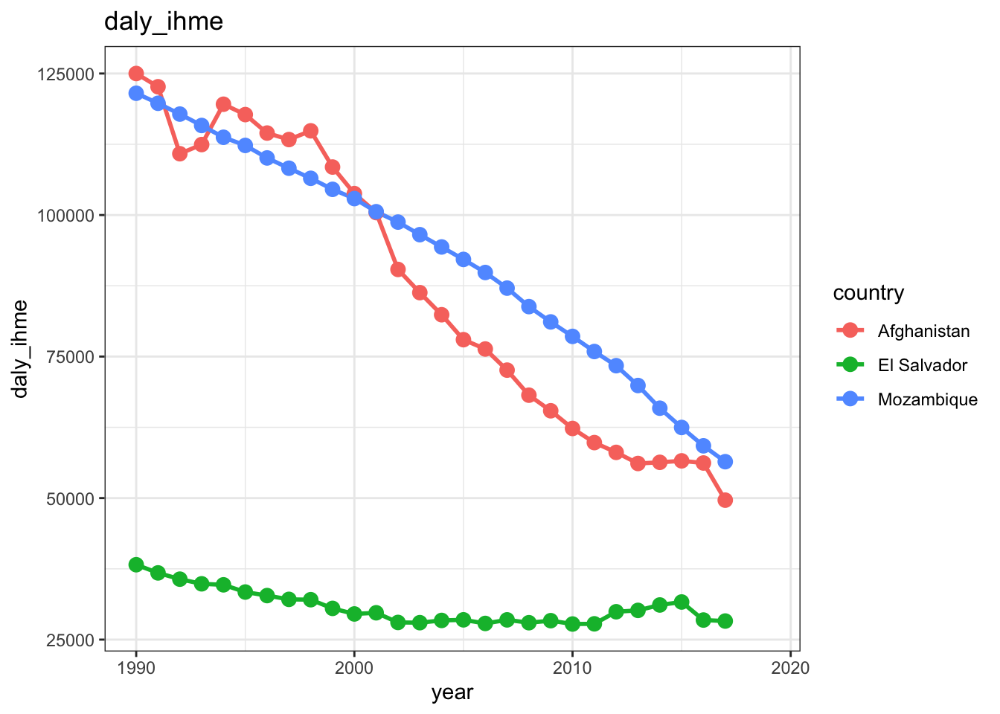
lapply(variables$gender_full, MakeFigure)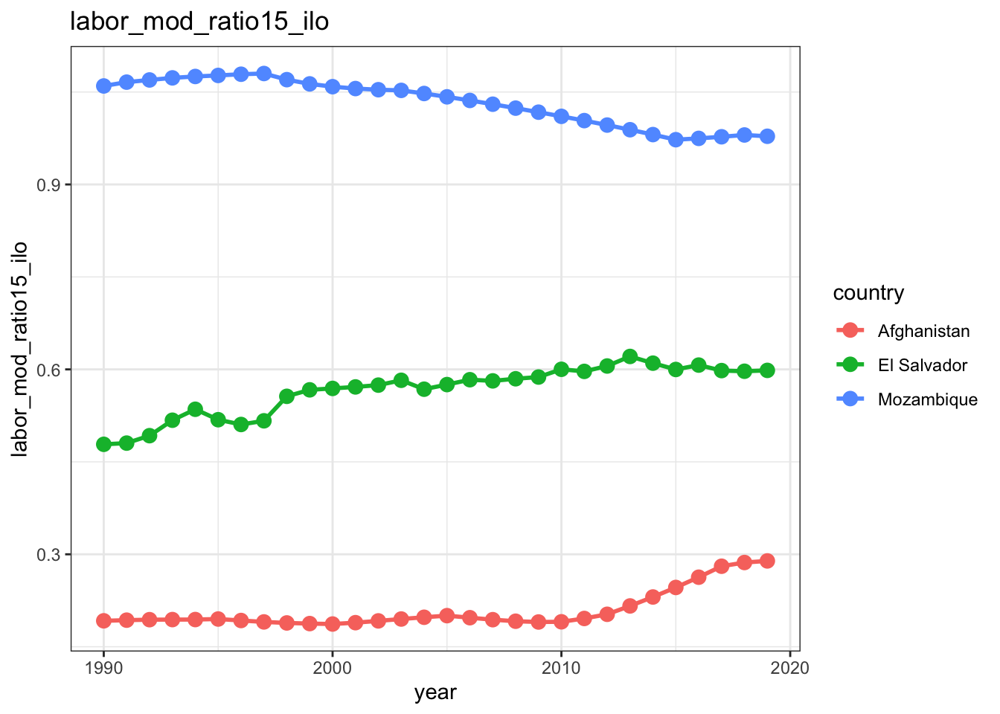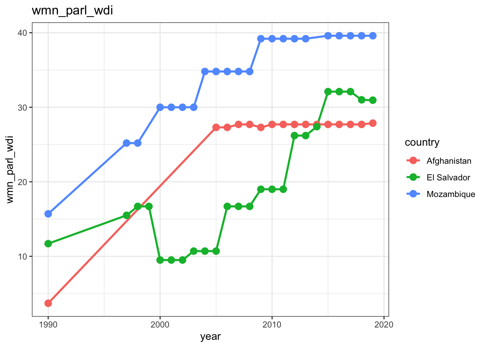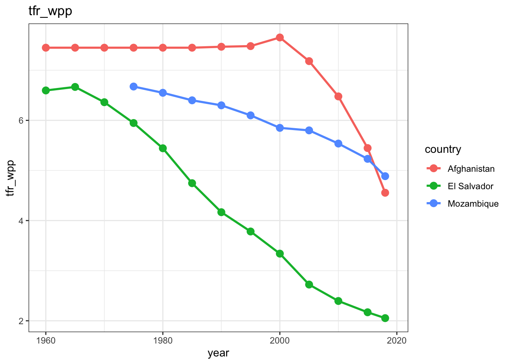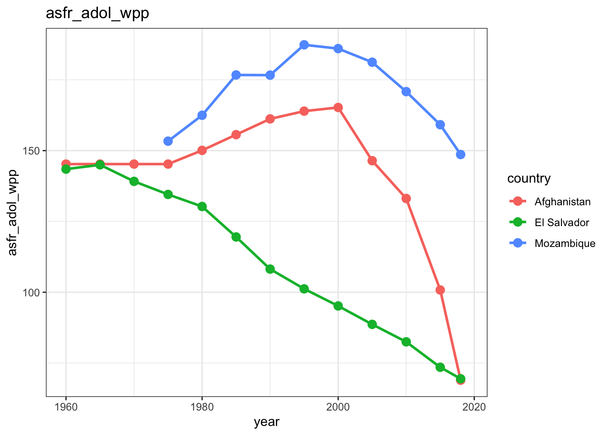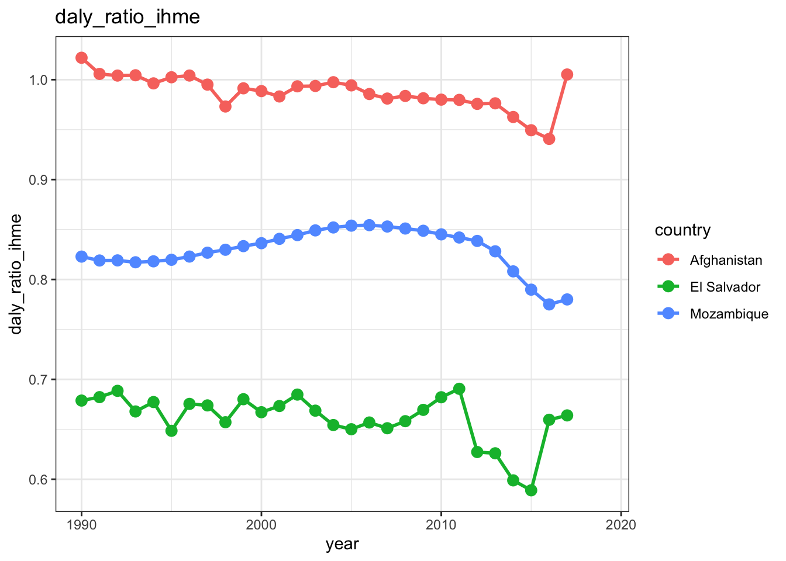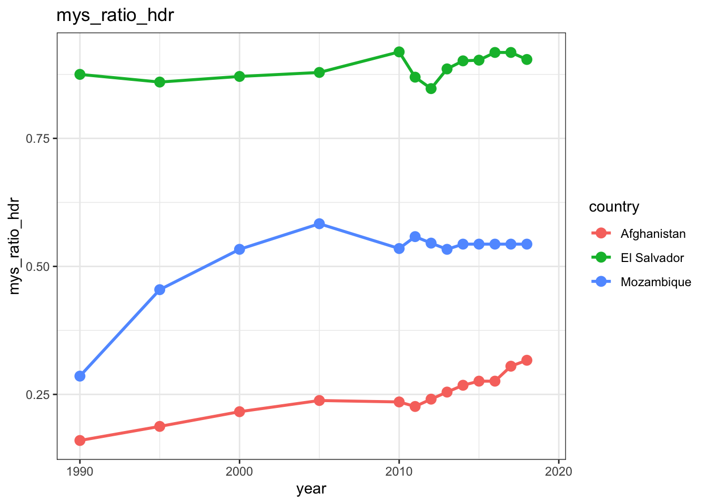
lapply(c("Afghanistan", "Mozambique", "El Salvador"), function(country) {
dat <- data[data$country == country, ]
dat <- dat %>% select(year, deaths_all_ext_rate, deaths_civilians_ext_rate, deaths_all_int_rate,
deaths_civilians_int_rate, deaths_all_osv_rate, deaths_civilians_osv_rate,
deaths_all_nsc_rate, deaths_civilians_nsc_rate, deaths_all_ucdp_rate,
hom_odcwho_rate) %>%
gather(key = "variable", value = "value", -year)
dat <- na.omit(dat)
ggplot(dat, aes(x = year, y = value)) +
geom_point(aes(color = variable), size = 3) +
geom_line(aes(color = variable), size = 1) +
theme_bw() + ggtitle(country)
})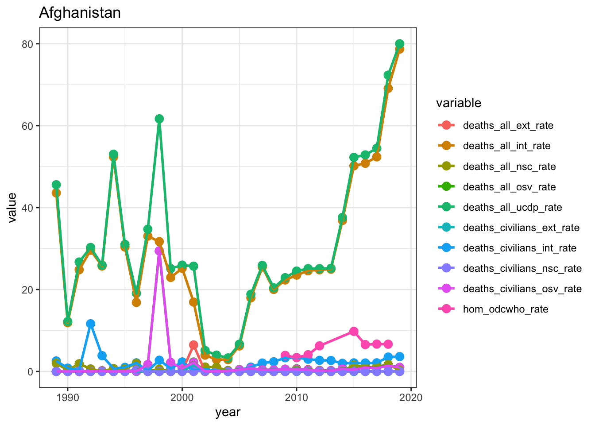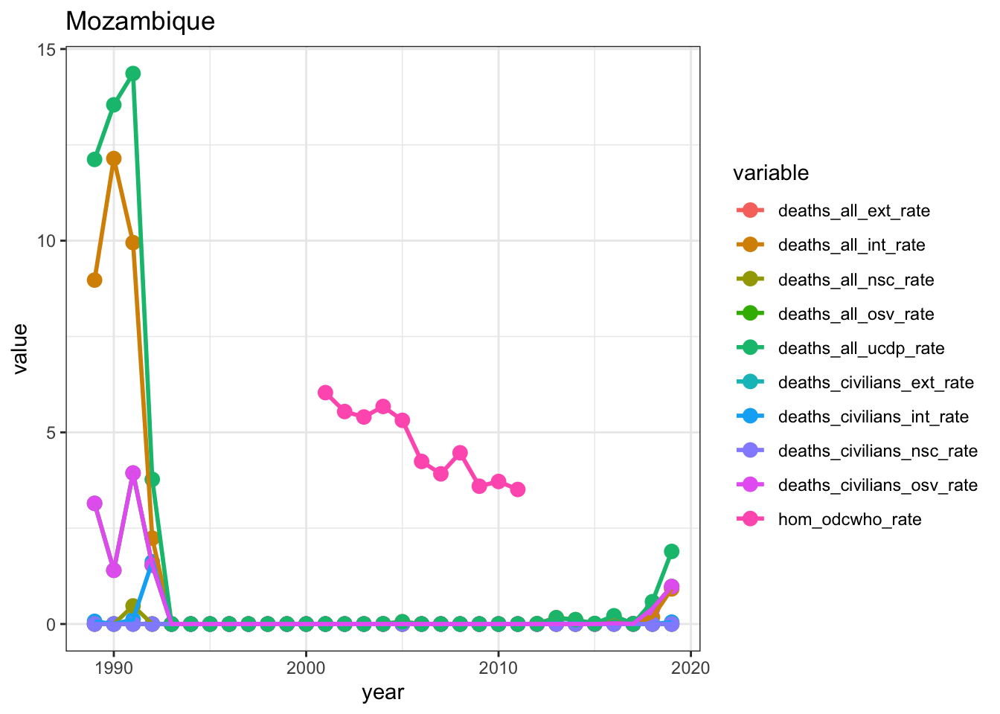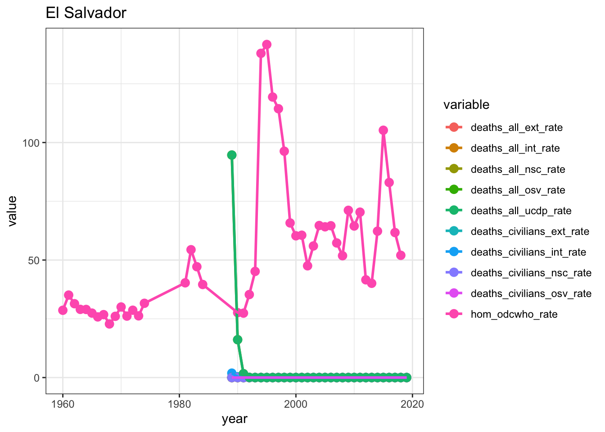